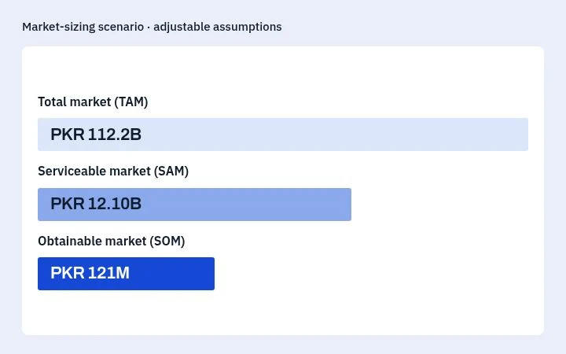
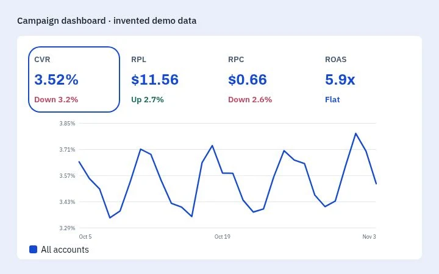
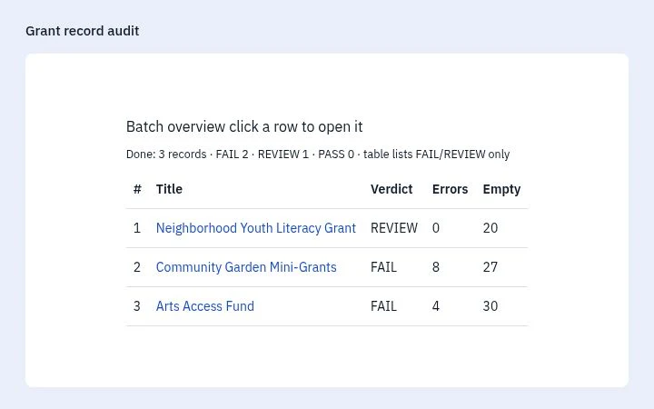
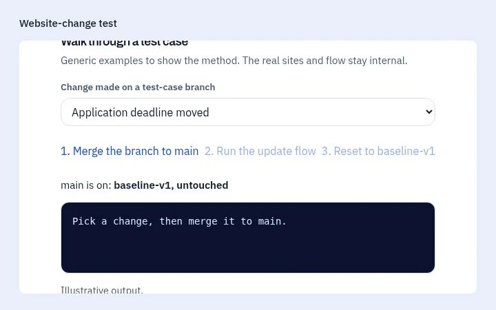

Healthy Herbals · Market research
Pakistan protein market sizing
I combined market research with visits to over 30 pharmacies to estimate demand.
Explore projectMarket research at Healthy Herbals, campaign analytics at Revcloud, and research tools and data QA at FreeWill.
Open a project to see the problem, my approach and the result.
Healthy Herbals · Market research
I combined market research with visits to over 30 pharmacies to estimate demand.
Explore project
Revcloud · Performance reporting
I built daily reports to help the team compare campaign performance.
Explore project
FreeWill · Research automation
I built a tool that cut a three-day grant review to one day.
Explore project
FreeWill · Test websites
I built controlled websites to test how the update flow handled changes.
Explore project